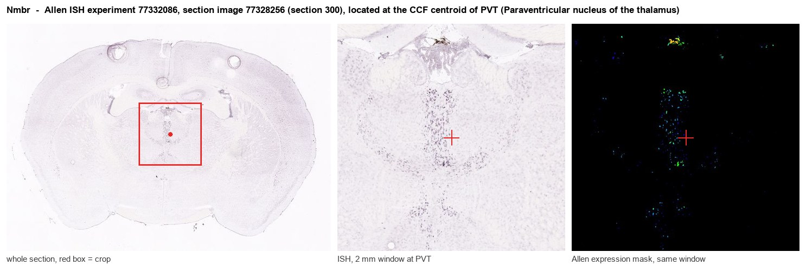
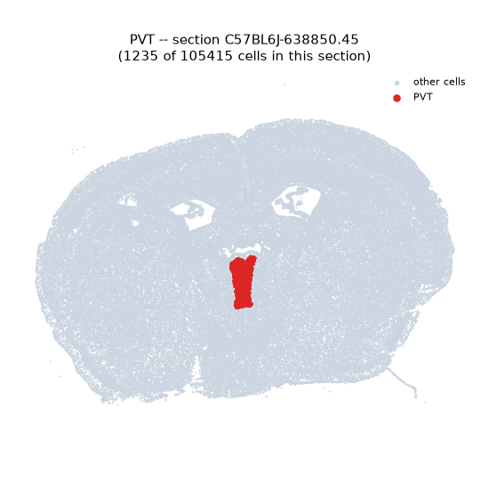
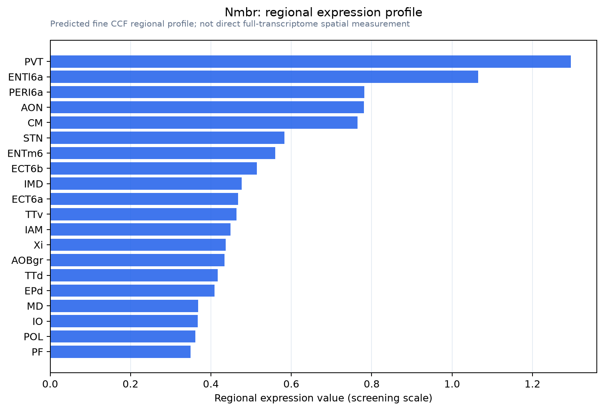

Nmbr
Neuromedin-B receptor (NMB-R) (Neuromedin-B-preferring bombesin receptor)
Spatial tier: RESTRICTED · Class: GPCR · Top region: PVT (Paraventricular nucleus of the thalamus) · Positive regions: 17/554
45.1Discovery Score
39.9Targetability Score
CEvidence grade C
What this means: Nmbr: fine CCF profile is restricted toward PVT (top regions: PVT, ENTl6a, PERI6a, AON, CM; 17 positive regions); direct spatial validation is still required.
Function in PVT: evidence, prediction, innovation
- Gene function
- Nmbr encodes the neuromedin B receptor (BB1), one of three mammalian bombesin-family class A GPCRs alongside GRPR (BB2) and BRS3. It couples to Gq, so neuromedin B binding activates phospholipase C, raises intracellular calcium and typically depolarises and excites the target neuron. The system is best known for histaminergic itch transmission, feeding and thermoregulation.
- Region function
- The paraventricular nucleus of the thalamus is a midline thalamic node for arousal, stress and motivational drive, projecting to nucleus accumbens, amygdala and prefrontal cortex.
- Published in this region
- expression only Bombesin-like peptide receptor binding sites were mapped across rat brain including midline thalamus by Moody 1988, and Ohki-Hamazaki 1997 cloned mouse Nmbr and described its CNS distribution. The strongest PVT result concerns the sister receptor: Hermes 2013 used perforated-patch recordings to show that gastrin-releasing peptide excites rat PVT neurons through postsynaptic BB2/GRPR by modulating inward-rectifier potassium and a TRPV1-like conductance, establishing bombesin-receptor signalling in PVT but through GRPR rather than NMBR.
- Predicted function
- Prediction: neuromedin B released in PVT should act as GRP does, using Gq signalling to close inward-rectifier potassium channels and open a TRPV1-like cation conductance, producing slow depolarisation of PVT projection neurons and amplifying their output to accumbens and amygdala. Local NMB infusion should therefore increase arousal and cue-driven seeking, while the NMBR antagonist PD168368 or an Nmbr knockout should blunt stress- and cue-evoked PVT recruitment and reduce anxiety-like behaviour. The cross-inhibition between NMBR and GRPR signalling described in itch circuits (Zhao 2014) predicts the two receptors will also oppose one another here.
- Innovation
- ★★★★☆ 4/5 GRPR signalling in PVT is established but the co-expressed neuromedin B receptor has never been tested there, and the pharmacology to do so already exists.
- Tools
- Nmbr knockout mice (Ohki-Hamazaki); selective antagonists PD168368 and BIM-23127; agonist neuromedin B; anti-NMBR antibodies; PVT accessible with retro-AAV from accumbens; no widely distributed Nmbr-Cre driver.
- References
Direct evidence located at the region

Allen ISH experiment 77332086, section image 77328256 (section 300): the section that contains the CCF centroid of Paraventricular nucleus of the thalamus according to the Allen image-to-atlas alignment (reference_to_image), with a 2 mm window around that point. Left: whole section, red box = window. Middle: ISH signal. Right: Allen's expression-mask view of the same window. open this image in the Allen viewer
Look it up yourself: Allen Mouse Brain ISH for NmbrAllen reference atlas: PVT (structure 149)ABC Atlas MERFISH viewer(in the ABC Atlas choose dataset MERFISH-C57BL6J-638850-CCF, colour cells by gene "Nmbr" or by parcellation_substructure "PVT")All genes confined to PVT + 3-D brain
Direct spatial evidence
MERFISH REGION LOCATOR

Regional expression figure

Predicted WMB × fine-CCF profile; not direct full-transcriptome spatial measurement.
Spatial profile
Evidence and specificity
- Evidence status
- PREDICTED_FINE
- Direct sources
- None; predicted localization only
- Exclusive threshold
- 12 positive regions out of 554
- Spatial specificity
- 0.348
- Top-region fraction
- 0.081
- Filter status
- PASS
Interpretation limits
- Cell-type-to-region projection is imputed expression, not direct spatial measurement.
- Adult reference atlases do not establish stability across age, sex, strain, state, or disease.
- Transcript abundance does not guarantee protein abundance or genetic-tool performance.